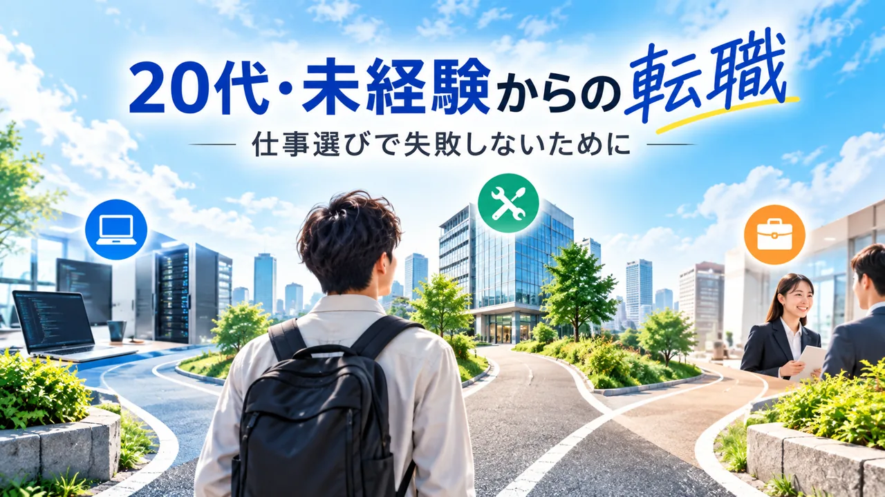

20代・未経験から転職するなら？仕事選びで失敗しない7つの候補と見極め方
更新：2026年9月24日
「今の仕事を辞めたい。でも、未経験で何に転職できるのか分からない」。そんなときに大事なのは、派手な“おすすめランキング”を信じることではありません。入り口の広さ・数年後に残る経験・自分が続けられる働き方の3つで候補を比べることです。

未経験転職で最初に見るポイント／候補にしやすい7職種／求人票で必ず確認したい条件／転職活動の進め方
20代・未経験転職は「3つの軸」で選ぶ
たとえば「年収が高そう」だけで選んでも、毎日の仕事内容が合わなければ長続きしません。逆に「楽そう」だけで選ぶと、次の転職で武器になる経験が増えないこともあります。
未経験から転職するときに検討したい7職種
ここでは順位を無理につけません。仕事内容も必要な適性も違うため、自分の条件に合うかで比較する方が実用的だからです。
| 職種 | 特徴 | 特に確認したいこと |
|---|---|---|
| ITヘルプデスク | PC・システムの問い合わせ対応 | 研修、対応件数、夜勤 |
| IT運用・管理 | サーバー等を安定稼働させる | 監視だけか、構築へ進めるか |
| ビル施設管理 | 電気・空調・給排水などを管理 | 宿直、配属施設、資格手当 |
| 法人営業 | 企業へ商品・サービスを提案 | 新規比率、ノルマ、商材 |
| カスタマーサポート | 顧客の問い合わせや問題解決 | 電話比率、KPI、クレーム対応 |
| 施工管理 | 工事の工程・安全・品質を管理 | 残業、休日、出張・転勤 |
| Webマーケティング | 広告・SEO・SNS等で集客改善 | 実際の担当領域、研修、実績の作り方 |
1｜ITヘルプデスク
社内外のユーザーから来る、PCやシステムに関する質問・トラブルに対応する仕事です。厚生労働省のjob tagにも「ヘルプデスク（IT）」として掲載されています。
PCが苦にならない説明が得意ITへの入口見るべき点：単純な一次受付だけなのか、アカウント管理や端末設定などまで経験できるのか。
2｜IT運用・管理
サーバーなどの情報システムを安定して動かすため、監視・運用・管理を行います。IT系へ進みたいものの、いきなりプログラミング職は不安という人が調べる価値のある分野です。
見るべき点：「監視のみ」で固定されるのか、運用から設計・構築、クラウドなどへ仕事を広げられるのか。
3｜ビル施設管理（ビルメン）
オフィスビルや商業施設などで、電気・空調・給排水設備の運転、点検、管理をする仕事です。job tagでは、入職時に特定の学歴や資格が必須とはされていない一方、中途採用では資格が条件になる求人も多いと説明されています。
同サイトの全国統計では、対応する職業分類の求人賃金は月25.0万円（令和7年度）、賃金（年収）は452.3万円。ただし年収値は平均年齢47.3歳の職業分類統計で、20代未経験者の初年度年収を意味する数字ではありません。
設備資格宿直ありの場合も見るべき点：常駐か巡回か、宿直回数、配属先、資格手当、緊急対応の頻度。
4｜法人営業
企業に商品・サービスを提案します。「営業」と一括りにせず、新規開拓か既存顧客中心か、個人ノルマかチーム目標か、何を売るのかまで確認するのが重要です。
強み：顧客との折衝、提案、数字管理など、別業界でも説明しやすい経験を作りやすいこと。
5｜カスタマーサポート
電話・メール・チャットなどで顧客の質問やトラブルに対応します。会社によって「問い合わせ窓口」と「顧客の継続利用を支援する仕事」では中身がかなり違います。
見るべき点：問い合わせ手段、1日の対応件数、評価KPI、クレーム対応の割合。
6｜施工管理
建設工事で工程・安全・品質などを管理し、職人や関係会社との調整を行います。仕事内容だけでなく、現場による勤務時間や休日、出張・転勤範囲を必ず確認したい職種です。
7｜Webマーケティング
Web広告、SEO、SNS、アクセス解析などで集客や売上改善を行います。ただし「Webマーケター募集」でも、広告営業に近い求人から分析・運用中心まで仕事内容はさまざまです。
見るべき点：何を担当するのか、未経験者への研修、入社後にどんな実績を作れるのか。
データについて：職業内容・ビル施設管理の統計等は厚生労働省「職業情報提供サイト job tag」を参照。統計は職業分類に対応した値で、特定企業や20代未経験者だけの給与を示すものではありません。最新条件は応募先の求人票で確認してください。
「未経験歓迎」の求人で確認する5項目
① 固定残業代
月給だけで判断せず、「何時間分・いくら」が含まれているか確認します。
② 休日の書き方
「週休2日制」と「完全週休2日制」は意味が違います。年間休日数も合わせて見ます。
③ 研修後の仕事内容
研修が豪華でも、配属後にどんな仕事をするのか不明なら要確認です。
④ 勤務地・転勤・夜勤
仕事内容が良くても、働き方が合わなければ続きません。求人票の小さい文字まで見ます。
⑤ 2〜3年後に何ができるか
資格、ITスキル、顧客折衝、マネジメントなど、次にも持っていける経験が増えるか考えます。
未経験転職はこの順番で進める
給与、休日、勤務地、夜勤の有無など。
最初から1職種に決め打ちせず、実際の求人を比較。
顧客対応、PC操作、トラブル対応、調整業務などを言語化。
仕事内容、配属、残業、休日、教育制度を確認。
基本給、固定残業、手当、勤務地、勤務時間を最終確認。
今後、20代・未経験向け転職サービスを「求人数」「サポート対象」「得意分野」など根拠のある項目で比較する記事を追加します。広告案件を掲載する場合は、広告であることも分かる形にします。
まとめ
20代・未経験からの転職で大切なのは、「一番おすすめの仕事」を探すことより、自分にとって入りやすく、経験が残り、続けられる仕事を探すことです。
まずは気になる2〜3職種の求人を見比べてください。そこで仕事内容や条件の違いが見えてくると、転職先選びは一気に具体的になります。